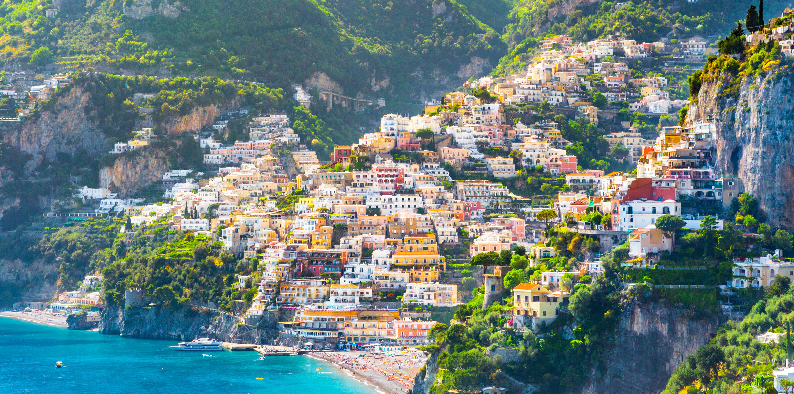
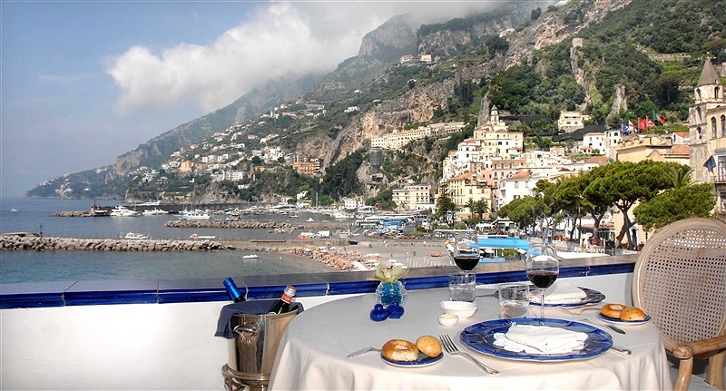
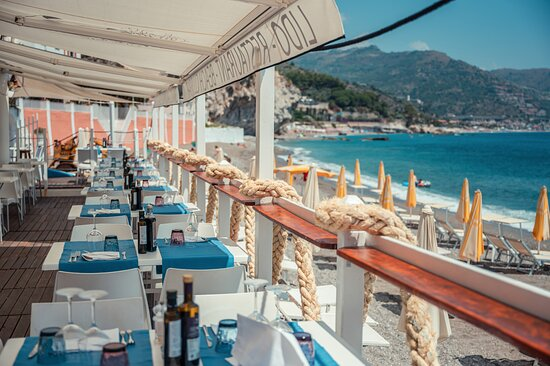

Xoş gəldiniz: Amalfinin Gözəlliklərini Kəşf Edin!

Amalfi haqqında
Amalfi, İtaliyanın Campania bölgəsində yerləşən kiçik, lakin tarixi və
mədəni zəngin bir şəhərdir.
Sahili boyunca uzanan bu qədim şəhər, UNESCO Dünya Mirası
siyahısına
daxil edilmişdir.
Qədim dövrlərdə güclü bir dəniz respublikası olan Amalfi, hazırda öz gözəl
sahilləri, tarixi abidələri və ləzzətli mətbəxi ilə tanınır.
Şəhər, əzəmətli Amalfi Katedrali və
möhtəşəm mənzərələri ilə ziyarətçiləri valeh edir.
Amalfinin limon bağları və limoncello içkisi
də
dünyaca məşhurdur. Burada həmçinin, dəniz məhsulları və yerli pastaların dadına baxmaq mümkündür.


Amalfi-də getməli olduğunuz restoranlar
EoloÜnvan: Via Mauro Comite, 3, 84011 Amalfi SA, İtaliya |
La CaravellaÜnvan: Via Matteo Camera, 12, 84011 Amalfi SA, İtaliya |
Lido AzzurroÜnvan: Via Lungomare dei Cavalieri, 5, 84011 Amalfi SA, İtaliya |
 |  |

|
|---|